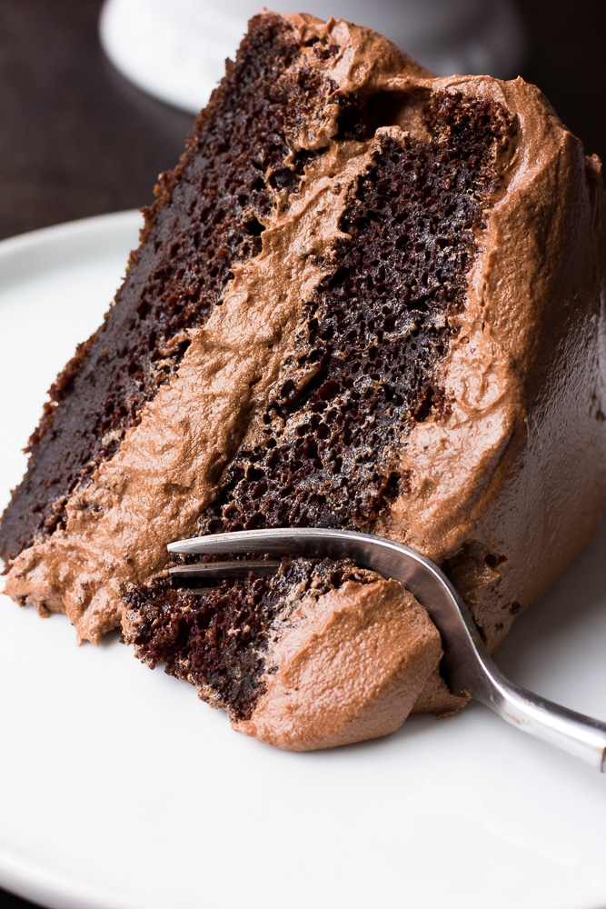

Vegan Chocolate Cake

Image of Vegan Chocolate Cake
Cake Ingredients
- 1 cup unsweetened almond milk
- 1 T apple cider vinegar
- 2 cups all purpose flour
- 1 3/4 cups granulated sugar
- 3/4 cup cocoa powder
- 2 tsp baking powder
- 1 1/2 tsp baking soda
- 1 tsp salt
- 1/2 cup canola oil OR melted coconut oil
- 2/3 cup unsweetened applesauce
- 1 tablespoon pure vanilla extract
- 1 cup boiling water
Chocolate Buttercream Frosting Ingredients:
- 1 cup cocoa powder
-
1 1/2 cups earth balance vegan butter, softened,
baking sticks preferred
- 4-5 cups powdered sugar
- 2 teaspoons pure vanilla extract
- 1/4-1/2 cup unsweetened almond milk
Cake Steps
-
Preheat oven to 350 degrees F and grease two 9-inch cake pans. I also
line them with parchment rounds and lightly flour for easy removal of
the cakes later.
-
Measure 1 cup unsweetened almond milk and add the tablespoon of
vinegar to it. Stir slightly and set aside to curdle.
-
In a large bowl, add the flour, sugar, cocoa powder, baking powder,
baking soda and salt. Whisk well to combine.
-
Now add the oil, applesauce, vanilla and almond milk/vinegar mixture.
Mix on medium speed with a hand mixer (or stand mixer with the paddle
attachment) until well combined.
-
Lower the speed and carefully pour in the boiling water, continuing to
mix into the cake batter until combined. The batter will seem very
runny at this point; that is how it should be
-
Divide the batter evenly between your cake pans. Bake for 30-35
minutes, or until a toothpick inserted in the center comes out clean.
After 10 minutes of cooling in the pan, carefully remove the cakes
from the pans and let cool completely before frosting.
Frosting Steps
-
Add the cocoa powder to a large bowl (I just wipe out the cake bowl
and use it for the frosting). Whisk well to remove any clumps.
-
Add the softened vegan butter and mix with a hand mixer until creamed
and well combined.
-
Add half of the powdered sugar and half of the almond milk, and mix
until combined. Add the rest of the powdered sugar and vanilla
extract. Mix starting on low, and turn to high. Mix until fluffy and
combined.
-
If the frosting seems too dry, add more milk, a tablespoon or two at a
time. If the frosting seems too wet and doesn't hold it's shape, add
more powdered sugar until it thickens up.
- Frost the cake using an icing spatula or just a butter knife.
Notes
-
For cupcakes, fill liners half full and bake for 20-25 minutes. The whole recipe will yield approximately 24 cupcakes.
-
Double the recipe to make a 4 layer cake, or cut in half to make a 1 layer round cake. You can also make a bundt cake, simply bake for 45 minutes. Or a 9 x 13 inch cake, baking for about 35-40 minutes.
-
You may substitute soy milk or another milk for the almond milk, any non-dairy milk will work here.
-
No applesauce?Substitute 2 flax eggs (2 tbs ground flax + 5 tbs water), whipped aquafaba or another egg replacer such as Bob's Red Mill (2 eggs worth).